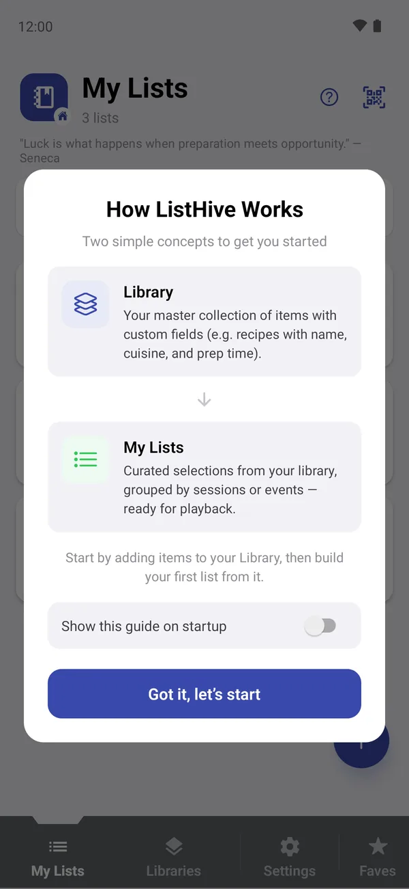
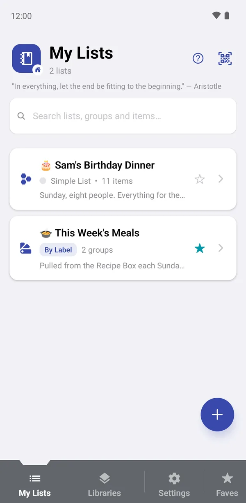

Getting started with ListHive
ListHive is for making lists of anything: a week of dinners, a party plan, a reading list, a set of bookmarks, meeting notes. You fill a list with whatever it needs: notes, headings, photos, links, videos, files, voice notes, scanned text, or items from a library of things you use again and again. This guide follows one kitchen from start to finish.
The two ideas behind ListHive
My Lists
A list collects everything for one purpose: this week's dinners, a birthday party, a class plan. Add notes, section headings, photos, videos, links, files, audio notes and scanned text directly, or share them in from other apps. Group the list if it repeats, and tick items off as you go.
Library
An optional collection of things you reuse, each with the details you choose: for recipes, the cuisine, cooking time, a photo, ingredients and method. Keep a recipe once, drop it into as many lists as you like, and edit it in one place.
The first time you open ListHive, the How ListHive Works guide introduces the same two ideas. You can bring it back at any time with the ? button at the top of the My Lists screen.

The example used in this guide
Every page uses the same kitchen, so you can see how the pieces fit together:
- 🎂 Sam's Birthday Dinner: a simple list for one evening. Most of it was added straight into the list: a shopping list PDF, a voice note from the market, a link to cake ideas, a video, notes, a photographed recipe card and a photo of the cake. Two dishes come from the Recipe Box.
- 🍲 This Week's Meals: a list with two groups, Dinners · Mon to Fri and Weekend · Slow and Sweet, with day headings, notes and recipes from the Recipe Box.
- Recipe Box: a library of recipes, each with a cuisine, cooking time, difficulty, photo, ingredients, method, a photo gallery, tags, a source link and a how-to video.
- Kitchen Suppliers: a library of shops and market stalls with phone numbers, email addresses, map locations, a price list and a voice memo.
You can download the same example and import it into ListHive to follow along: Recipe-Box.listhive (10 MB), then Birthday-Dinner.listhive (9 MB). See Importing a .listhive file.
Your first list in five minutes
You don't need anything set up first. A list can start empty and grow as you go:
- Create a list. Open the My Lists tab, tap +, give it a name such as Sam's Birthday Dinner and choose Simple (one list) or Groups (for something that repeats, like weekly dinners). More about creating lists.
- Add what it needs. Inside the list, tap + and pick from Note, Section Divider, Photo, Video, URL, File, Audio Note, Scan Text or Library Item. Mix them freely. All the ways to add.
- Save things from other apps. Found a recipe in your browser? Tap Share there and choose ListHive to drop the link straight into your list. More about sharing in.
- Use it. Tap any item to open it full screen, swipe between items, and tap Mark Done as you finish each one. More about playing a list.
When a library helps
If you find yourself adding the same things to list after list, such as your regular recipes, songs or exercises, keep them in a library. You design the fields once (Cuisine, Time, Photo, Ingredients…), fill in each item once, and then add it to any list with Library Item. Change a recipe in the library and every list that uses it sees the change.
- Open the Libraries tab, tap +, name the library and add a few fields. More about creating libraries.
- Add items by hand, or many at once from a spreadsheet with CSV import.
- In any list, tap + → Library Item and tick the ones you want.
Libraries are entirely optional. A list of links, notes and photos works perfectly well without one.
Finding your way around
The bar at the bottom of the screen has four buttons:
- My Lists: your lists, with search across every list, group and item.
- Libraries: your libraries and their items.
- Settings: import, backup, appearance, security and help.
- Faves: opens your favourites. Tap the ☆ on any list, group or library to add it.
Inside a list or library, the row under the title shows where you are, for example Home › This Week's Meals › Dinners · Mon to Fri. Tap any part of it to jump back.
ListHive works offline and keeps everything on your device. There is no sign-in and no cloud sync, so remember to back up now and then.

All help topics
My Lists
Notes, sections, photos, links, files, voice notes, scans, library items and groups.
▶️Playing a list
Go through a list one item at a time and mark items done.
📚Libraries
Keep reusable items with your own fields and add them to any list.
🧩Field types
All 16 kinds of library field, from text and dates to galleries, maps and audio.
📤Sharing
Share as a file, text or picture, and save things from other apps.
📥Import, CSV & QR
Open .listhive files, import spreadsheets and share with QR codes.
🛟Backup & restore
Encrypted backups, automatic backups and restoring.
⚙️Settings
Colours, text size, app lock, favourites, trends and ads.
❓FAQ
Quick answers and fixes for common problems.